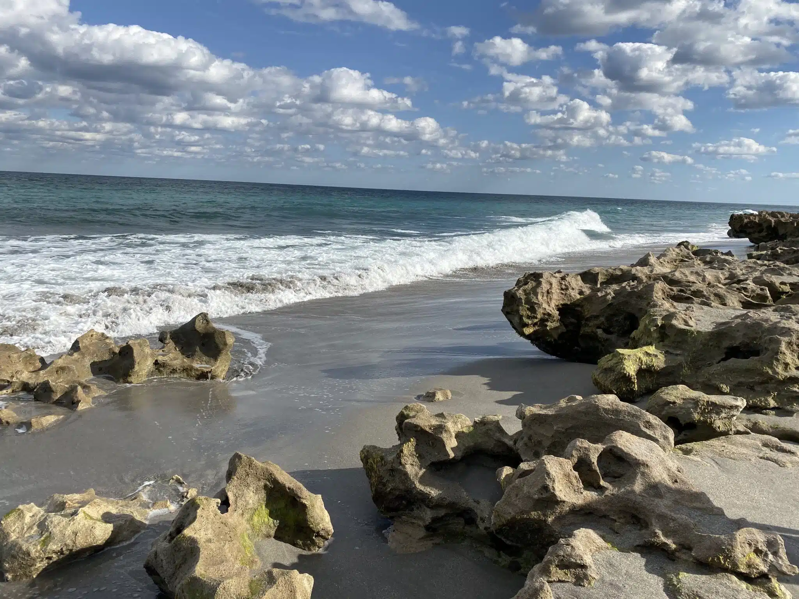
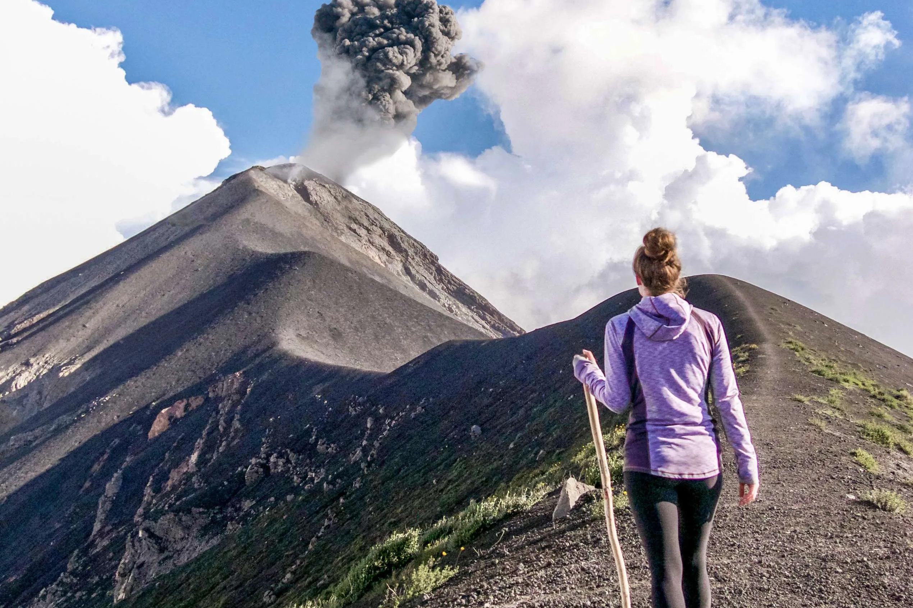

Yellow Leaf Bay
White, sandy beaches encircle Yellow Leaf Bay near Taniti City. The city also offers native architecture to explore between visits to the shore.
Spend your days by the bay, beneath the rainforest canopy, or exploring Taniti’s volcanic interior. Discover the island’s beaches, local culture, and entertainment.
White, sandy beaches encircle Yellow Leaf Bay near Taniti City. The city also offers native architecture to explore between visits to the shore.

Taniti’s varied coastline includes both sandy and rocky beaches. Explore the island’s coastal scenery alongside its small, safe harbor.

Hikes through Taniti’s lush tropical rainforest are a popular way to explore the island’s interior.

Visits to Taniti’s small, active volcano are among the island’s most popular sightseeing activities.
Enjoy snorkeling or take a chartered fishing tour. Boat and bus tours also offer ways to see more of the island.
Visit the local history museum and browse art galleries for a closer look at the island’s cultural offerings.
Experience the rainforest by zip line or see the island from above on a helicopter ride.
Visit pubs, a microbrewery, or the new dance club. Movies, an arcade, and bowling offer more entertainment options.
Many entertainment options are in Merriton Landing, on the north side of Yellow Leaf Bay.
Explore transportation options around the island.
View Transportation